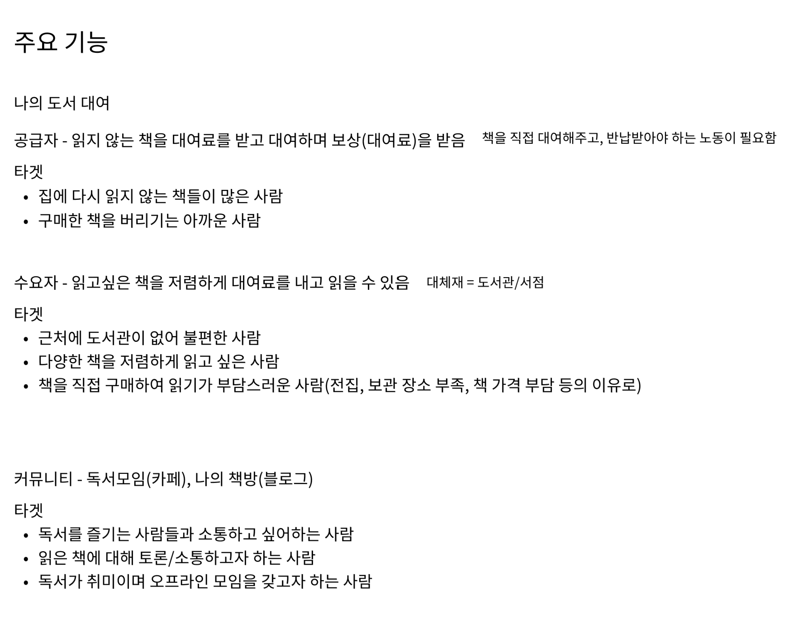
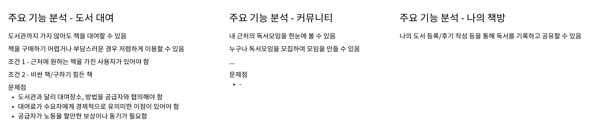
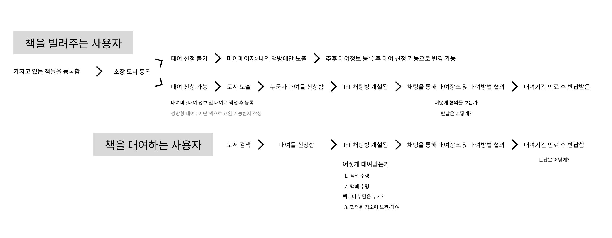
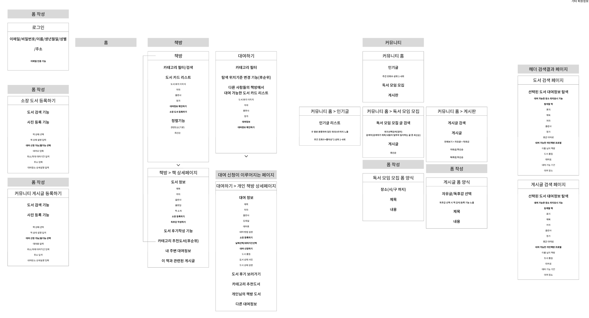
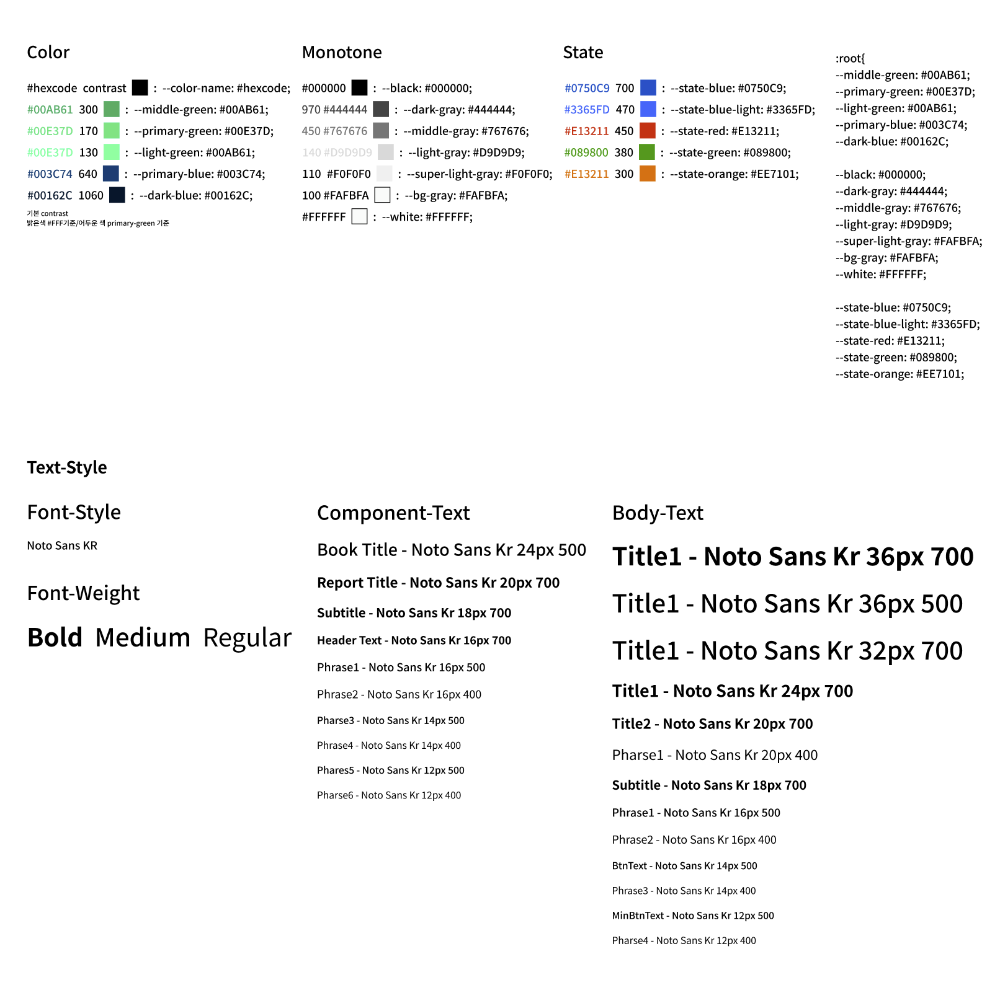
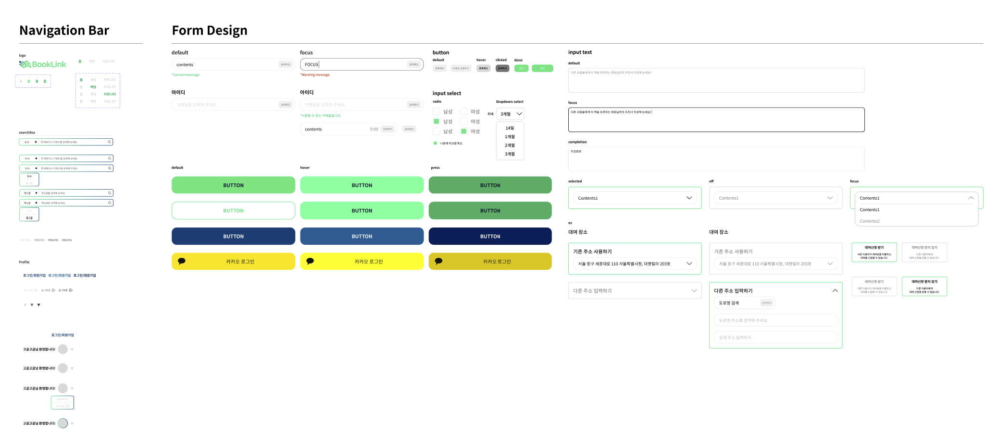
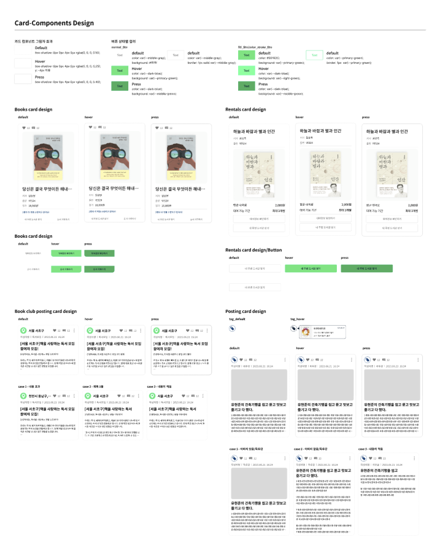
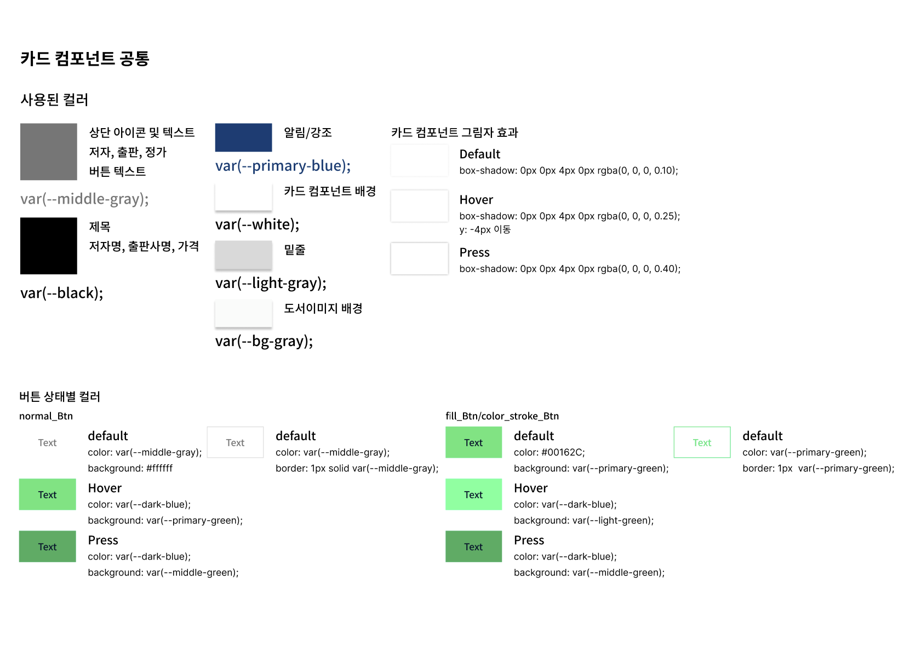
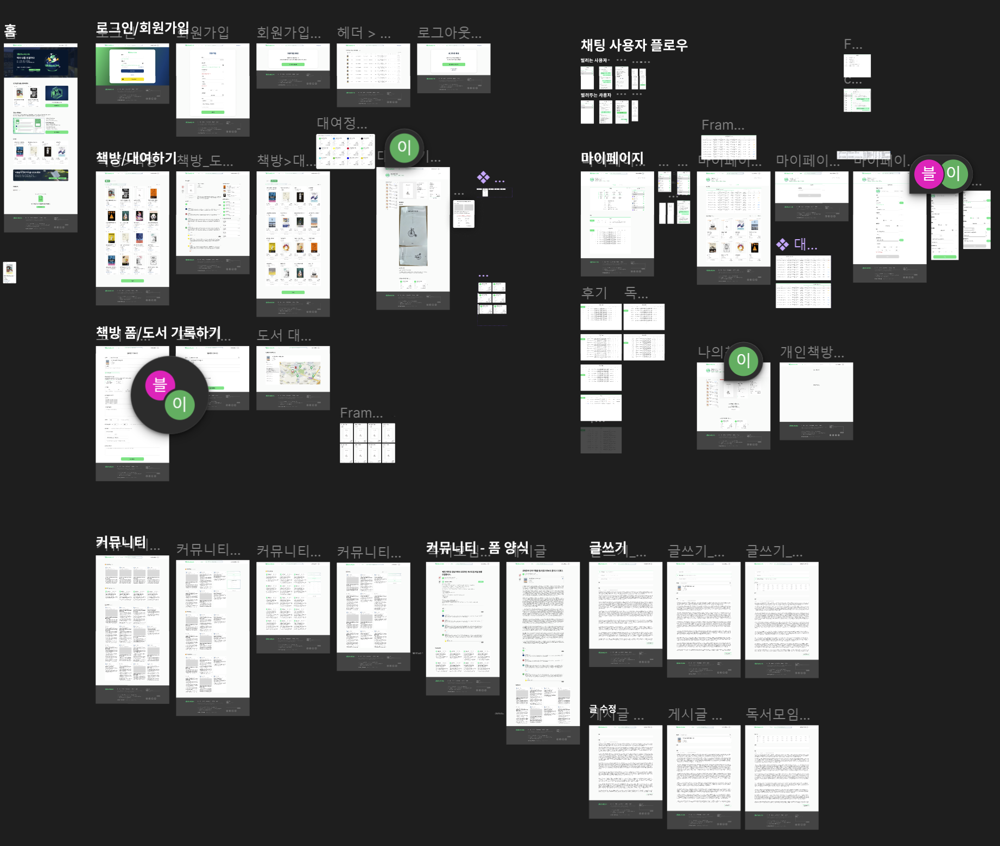
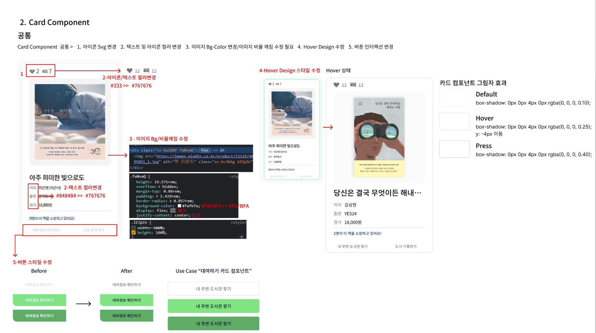

프로젝트 진행 과정
북링크 - 독서 기록부터 도서 대여까지!
독서는 그 자체만으로도 유익합니다. 그래서 우리나라 국민들은 독서의 필요성에 대해서 높이 평가합니다. 하지만 이와 반대로 독서율은 점점 낮아지고 있습니다. 이러한 현상에 대해 “독자 개발 연구 보고서”에서는 청소년 시절의 학습용 독서가 부정적인 경험으로 남아 책 자체에 관심이 없어진 것을 중요한 원인으로 꼽았습니다. 북링크는 이러한 원인들을 중심으로 즐거운 독서 경험을 만들어나가고자 합니다. 북링크는 나만의 책방을 만들어 독서를 기록하고 공유할 수 있으며, 커뮤니티를 통해 더욱 쉽게 독서 모임을 만들거나 찾아볼 수 있습니다. 또한 내가 가지고 있는 책을 대여해주는 도서 대여 서비스를 통해 보상을 얻을 수 있습니다.
프로젝트 경험
회원 가입과 결제 기능을 중심으로 한 도서 대여 서비스를 개발중인 팀에 UI 디자이너로 참여하게 되었습니다. 주제와 기능이 이미 정해진 상황이었지만 기획의 문제점을 확인하며 프로젝트의 방향성을 개선하고자 노력했습니다.
기획의 한계에 대한 제안과 개선
기존 기획의 문제점은 첫 번째로, 유저들이 중고 거래 서비스를 두고 북링크를 이용해야 할 이유가 부족했고 두 번째로, 이를 해결할 차별성이
존재하지 않았습니다.
문제 개선을 위해 유저 리서치와 독서 관련 자료, 유사 서비스를 조사했으며 성인의 독서 증진을 위한 서비스가 없다는 점, 현재 독서율이
저하되고 있지만 책을 읽는 것에 도전하는 유저가 많다는 점을 발견하였습니다. 이를 바탕으로 타겟을 설정하고, 유저 시나리오를 작성하여
차별성, 사용성 증진을 통한 기존 도서 대여 서비스의 이용 유도 방안을 기획하였습니다. 팀원들을 개선 방안을 제시했고 모두의 동의를
얻으며 리뉴얼된 기획으로 프로젝트를 이어나갈 수 있었습니다. 동의해준 동료들에게 책임감을 느끼고 적극적으로 소통하며 기획과 디자인을
주도적으로 진행하게 되었습니다.
디자이너로서의 역할
새로운 기획에 동의해 준 동료들에게 책임감을 느끼며 프로젝트의 디자인과 기획을 주도하였습니다. 주어진 기간이 짧았기 때문에 신속한 의사소통과 디자이너의 개발 지식이 중요하다는 것을 경험하였습니다.
  협업과 의사소통 능력 강화
프로젝트에서는 주어진 기간 동안 빠른 개발을 위해서는 효율적인 의사결정 과정이 필수적이었습니다. 개발자와 밀접한 협업을 통해 기능과 관련된 오픈 API를 찾아 제안하고, 데이터 설계를 보기 쉽게 작성하며 개발자들이 최대한 효율적으로 작업할 수 있도록 돕기 위해 적극적인 소통을 이어나갔습니다.
서비스 구조 개선과 API 활용
기획 단계에서 API 활용과 데이터 구조를 개선하는 데에 주력하였습니다. 도서 검색 서비스에서는 알라딘의 Open API를 사용하면서 서버에 너무 많은 책 데이터가 쌓이는 문제를 해결하기 위해 사용자가 좋아요를 누르거나 후기를 작성했을 때 데이터가 쌓이도록 설계했습니다. 또한, 책의 정렬 기능에 대한 논의에서도 API와 함께 좋아요, 후기, 조회수 등을 활용하여 효율적인 정렬을 구현하였습니다.
프로젝트 진행 시 디자인 시스템 정립
프로젝트 진행 중 GUI 디자인에 있어서는 디자인 시스템을 정의하고, 프론트엔드 개발자와의 긴밀한 협업을 통해 디자인의 일관성을 유지하며 효율적인 작업을 이어나갔습니다.
   개발자와의 긴밀한 협업
프로젝트를 통해 프론트엔드 개발자와의 긴밀한 협업을 통해 빠르게 프로젝트를 진행할 수 있는 능력을 강화하였습니다. 서로 다른 분야에서의 지식을 교환하며 효과적인 팀 협업을 경험했습니다.
 UI/UX 디자이너로서의 성장과 적극적인 역할 수행
프로젝트를 통해 UI/UX 디자이너로서 성장하고, 주도적이고 적극적인 역할 수행을 통해 팀의 성과를 향상시킨 경험은 저를 더 강력한 디자이너로 만들었습니다. 협업과 소통이 서비스의 품질을 높이는 핵심적인 역할을 한다는 것을 몸소 깨달을 수 있었습니다.
기획 과정
문제 정의
기존 기획의 문제점은 크게 이용자 확보를 위한 차별성을 만들어내는 것 이었습니다.
문제 개선을 위해 유사 서비스를 조사하였습니다.
리서치
유사 서비스, 유저 리서치, 시장 조사를 통해 차별성에 대한 인사이트를 얻고자 하였습니다.
우리집은 도서관
위 서비스는 도서 공유경제 플랫폼으로 이용자가 직접 다른 사람에게 도서를 대여해줄 수 있고, 위탁할 수도 있습니다. 위탁하는 경우 택배를 통해 플랫폼에 책을 위탁하여 해당 책이 대여되는 경우 대여료의 50%를 지급합니다. 플랫폼은 택배를 통해 도서를 대여해 줍니다. 이용자는 편리하게 책을 빌리거나 빌려줄 수 있는 서비스입니다.
국민도서관 책꽂이
위 서비스는 온라인 도서 공유 서비스로 택배를 통해 온라인 도서 대여가 가능한 서비스입니다. 이용자는 택배비만을 소비하고 무료로 한 번에 15권의 책을 대여할 수 있습니다. 무료 회원은 최신간을 대여할 수 없습니다. 연 회비를 지불하면 최신간 대여가 가능해지며 일정 횟수의 택배비를 지원받을 수 있고 한번에 더 많은 책을 대여할 수 있습니다.
조사 결과
유사 서비스들은 택배를 통해 책을 대여할 수 있습니다. 도서들은 주로 아동용 도서, 전집 등 처리하기 어려운 도서들이었습니다. 특히 아동용 도서는 기본적으로 풀컬러 인쇄로 원가도 비싸고, 전집인 경우가 많아 경제적으로 매우 부담스럽지만, 그에 반해 금새 읽지 않는 책으로 전락합니다. 하지만 책은 아이들에게 꼭 필요하기 때문에 경제적 효율성의 니즈가 충족되어 도서 공유가 활발히 이루어질 수 있었습니다.
새로운 기획안 컨셉 도출
리서치 결과와 같이 유사 서비스들은 필요성에 의해 도서 공유가 활발히 이루어질 수 있었습니다. 하지만 성인의 독서 증진을 위한 서비스는
아니었습니다. 청소년 독해율 저하가 사회적 이슈로 떠올랐고 여러 매체에서는 독서율 저하를 원인으로 꼽았습니다.
갈수록 사람들이 책을 읽지 않는다.
점차 낮아지는 독서율은 2021년 기준 47.5%에 달합니다. 1년동안 책을 단 한권도 읽지 않았다고 응답한 성인이 절반에 가깝습니다.
“독자 개발 연구 보고서”에서는 청소년 시절의 학습용 독서가 부정적인 경험으로 남아 책 자체에 관심이 없어진 것을 중요한 원인으로
꼽았습니다.
설문조사에 따르면 책을 읽지 않는 이유로 대부분 책을 읽을 시간이 없다고 응답하였습니다.
영상 콘텐츠 시청, 다른 취미생활 등으로 책을 읽지 않는 것입니다.
결국 독서 경험이 영상, 숏폼 콘텐츠 등 다른 것들보다 재미있어야 한다는 의미라고 생각했습니다.
북링크는 이러한 문제를 해결하기 위해 새로운 독서 경험을 제공하고자 합니다.
기획 전략 도출
북링크 - 책과 나를 연결하다
독서 기록부터 나의 도서 대여까지!
책과 나를 잇는 북링크 서비스를 경험해 보세요.
위의 컨셉으로 새로운 독서 경험을 제공하고자 합니다.
중고나라, 당근마켓과 같은 중고거래 플랫폼처럼 네이버 카페같은 곳에서 기존 이용자를 확보해 둔 상태가 아니기 때문에 현재의 서비스는
사용자가 굳이 기존의 중고 거래 서비스를 두고 북링크 서비스를 이용해야 할 이유가 없습니다. 설령 이용자들이 유입되어 서비스를 이용하게
된다고 해도, 어떠한 유대감이나 연결점이 없는 상태에서 적은 금액의 도서 대여 보상만으로 도서 대여가 정상적으로 이루어질 수 있는 근거가
부족합니다.
그렇기 때문에 기존의 도서 대여 서비스를 제대로 활용하기 위해서는 이용자 확보가 꼭 필요했습니다.
이용자 확보 및 대여 유도를 위한 주요 기능의 전략
- 북링크는 도서검색 Open API를 활용하여 서비스를 이탈하지 않고도 책들을 검색할 수 있도록 합니다. 책 검색 외에도 도서 후기를 남길 수 있으며 다른 이용자가 책을 선택하는데 도움을 줄 수 있습니다.
- 독서를 즐겨 하는 사용자들을 확보하기 위해 독서 기록 서비스를 제공하고자 합니다. 서비스에서 나의 독서를 기록할 수 있습니다. 블로그 형식으로 나의 책방에 기록되어 내가 읽은 책들을 한 눈에 볼 수 있습니다. 독서 기록은 책의 내용을 이해하는데 도움이 되며 나의 책장이 쌓여가는 성취감도 느낄 수 있습니다.
- 이미 읽은 책이라면 소장하고 있을 가능성이 높습니다. 독서 기록 시 사용자에게 대여 도서 등록 여부를 물어보며 대여 도서로 등록할 수 있도록 유도합니다.
- 독서 기록하기 페이지에서 대여 도서를 등록하는 이유: 대여 도서 등록만을 원하며 독서 기록을 작성하지 않으려는 사용자에게도, 짧게나마 책의 내용을 떠올릴 수 있도록 유도하기 위함입니다.
- 대여하기 탭에서 대여 가능한 책들을 탐색할 수 있습니다. 대여 승낙 시 1:1 채팅 기능을 제공하여 사용자 간 대여를 더욱 원활히 진행할 수 있도록 돕습니다.
- 함께하는 독서 경험을 제공하기 위해 커뮤니티에서 독서 모임을 모집할 수 있습니다. 내 주변으로 필터링하여 오프라인 독서 모임에도 참여할 수 있습니다.
- 게시판에서는 독후감이나 자유글을 작성하며 자유롭게 의견을 나눌 수 있습니다. 독후감은 해당 책 정보에서 노출되어 다른 이용자의 책 선택에 도움을 줄 수 있습니다.